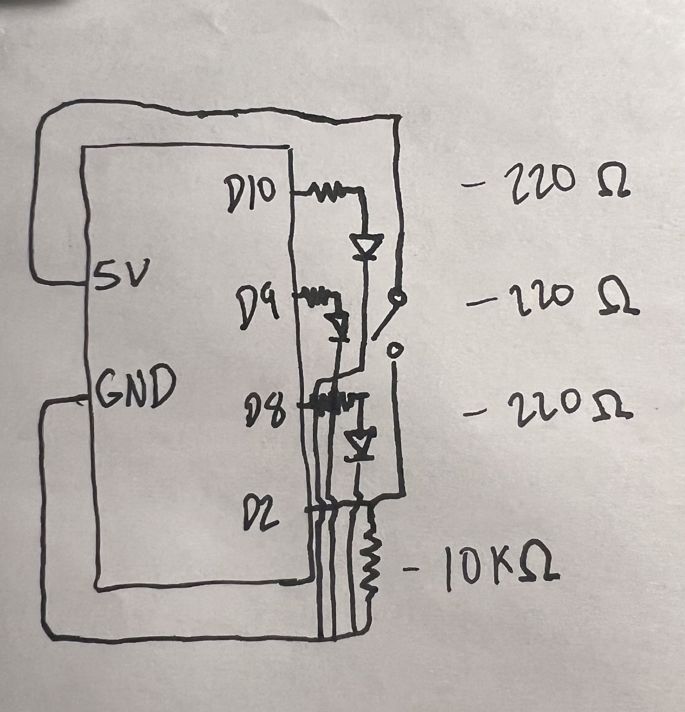
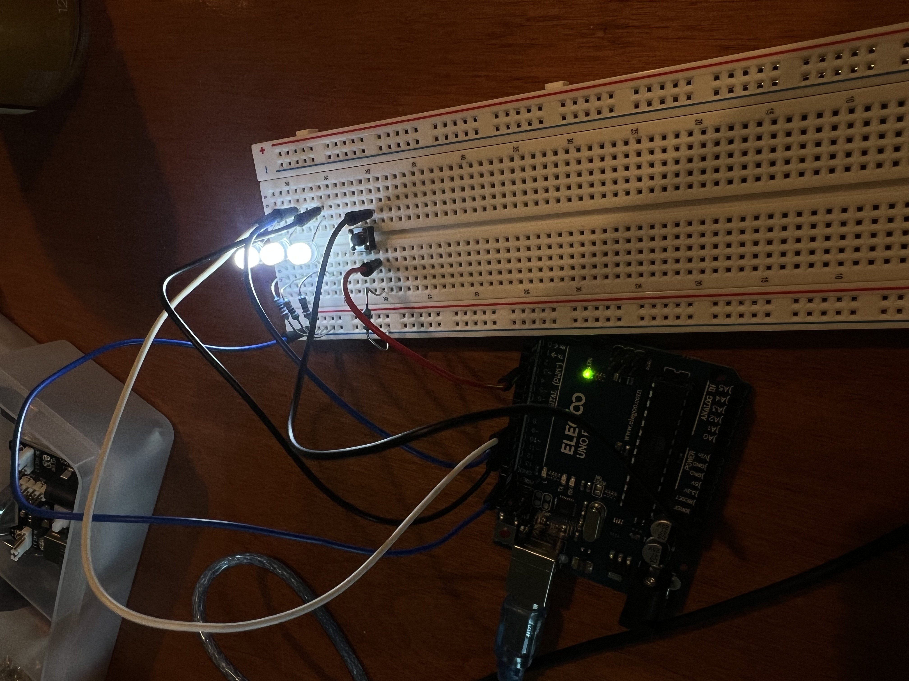
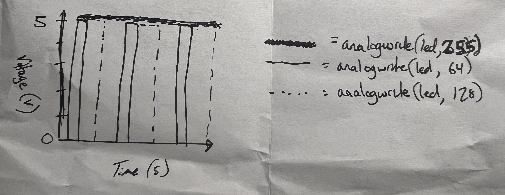

Firmware:
// Store the button pin number
const int buttonPin = 2;
// Store the pin number for the first red LED
const int ledPin1 = 8;
// Store the pin number for the second red LED
const int ledPin2 = 9;
// Store the pin number for the white LED (PWM pin for fading)
const int ledPin3 = 10;
// Store the current button reading
int buttonState = 0;
// The setup function runs once when the Arduino starts
void setup() {
// Configure the first LED pin as an output so it can be turned on and off
pinMode(ledPin1, OUTPUT);
// Configure the second LED pin as an output so it can be turned on and off
pinMode(ledPin2, OUTPUT);
// Configure the third LED pin as an output so it can use PWM for fading
pinMode(ledPin3, OUTPUT);
// Configure the button pin as an input to read button presses
pinMode(buttonPin, INPUT);
}
// The loop function runs continuously after setup completes
void loop() {
// Read the current state of the pushbutton
buttonState = digitalRead(buttonPin);
// Ensure the first LED starts in the OFF state each loop iteration
digitalWrite(ledPin1, LOW);
// Ensure the second LED starts in the OFF state each loop iteration
digitalWrite(ledPin2, LOW);
// Ensure the third LED is fully off by setting PWM output to zero
analogWrite(ledPin3, 0);
// Check whether the button is currently being pressed
if (buttonState == HIGH) {
// Turn the first red LED fully ON
digitalWrite(ledPin1, HIGH);
// Turn the second red LED fully ON
digitalWrite(ledPin2, HIGH);
// Gradually increase the brightness of the white LED while the button remains pressed
for (
// Initialize brightness at minimum value
int brightness = 0;
// Continue increasing brightness while below maximum and button remains pressed
brightness <= 255 && digitalRead(buttonPin) == HIGH;
// Increase brightness in small steps
brightness = brightness + 5
) {
// Output the current brightness level to the white LED using PWM
analogWrite(ledPin3, brightness);
// Pause briefly to make the fade visible to the human eye
delay(10);
}
// Gradually decrease the brightness of the white LED while the button remains pressed
for (
// Initialize brightness at maximum value
int brightness = 255;
// Continue decreasing brightness while above minimum and button remains pressed
brightness >= 0 && digitalRead(buttonPin) == HIGH;
// Decrease brightness in small steps
brightness = brightness - 5
) {
// Output the current brightness level to the white LED using PWM
analogWrite(ledPin3, brightness);
// Pause briefly to make the fade visible to the human eye
delay(10);
}
}
// If the button is not pressed, ensure all LEDs remain off
else {
// Turn off the first red LED
digitalWrite(ledPin1, LOW);
// Turn off the second red LED
digitalWrite(ledPin2, LOW);
// Turn off the white LED by setting PWM output to zero
analogWrite(ledPin3, 0);
}
}
Schematic & Circuit:

Including the formulas used to calculate the correct resistors per LED

Functioning circuit:
Additional Questions:
1: Draw a chart where the X axis is time and the Y axis is voltage. Draw 3 lines representing the voltage across an LED with analogWrite(led, 64), analogWrite(led, 128), and analogWrite(led, 255).

2: If all your LEDs were on simultaneously, what would the total current draw be? Is this above or below the total Arduino current draw limits? If all your LEDs were on, how long would your circuit run if powered by a 1200 mAh battery?
If all three LEDs were on simultaneously, the total current draw would be approximately 26.4 mA. Each red LED would draw about 9.1 mA, and the white LED would draw about 8.2 mA. This total current is well below the Arduino's recommended current limits and is safe for normal operation. If the circuit were powered by a 1200 mAh battery and only the LED current were considered, the circuit could theoretically run for about 45 hours before the battery was depleted
3: Measure and record the actual voltage across one of your LEDs when it's on. How does this compare to the theoretical forward voltage for your LED color?
When the white LED was fully on, the measured voltage across the LED was approximately 3.05 V. This value is close to the theoretical forward voltage of a white LED, which is typically around 3.0 to 3.3 V.
4: Did you use AI tools in completing this assignment? If yes, please provide details on how/when, as well as a brief reflection. If no, you can either leave this question blank, or provide other information if you'd like.
I used generative AI in further understanding how to implement Arduino concepts and clearly summarize written explanations.